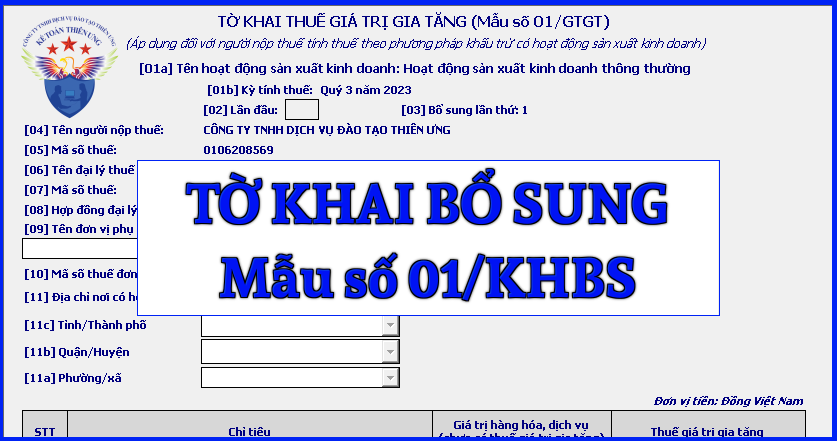

Mẫu tờ khai bổ sung mới nhất năm 2024 là mẫu số: 01/KHBS được ban hành kèm theo Thông tư số 80/2021/TT-BTC.
|
CỘNG HOÀ XÃ HỘI CHỦ NGHĨA VIỆT NAM
Độc lập - Tự do - Hạnh phúc TỜ KHAI BỔ SUNG
[01] Mẫu tờ khai: ……
[02] Mã giao dịch điện tử: …… [03] Kỳ tính thuế: …… [04] Bổ sung lần thứ: …… [05] Tên người nộp thuế:.............................................................. [06] Mã số thuế: [07] Tên đại lý thuế (nếu có):....................................................... [08] Mã số thuế: [09] Hợp đồng đại lý thuế: Số........................ ngày...................... A. Xác định tăng/giảm số thuế phải nộp và tiền chậm nộp, tăng/giảm số thuế được khấu trừ, tăng/giảm số thuế đề nghị hoàn:
I. Xác định tăng/giảm số thuế phải nộp và tiền chậm nộp:
1. Số thuế phải nộp trên tờ khai điều chỉnh tăng/giảm:
Đơn vị tiền: …
2. Số thuế phải nộp trên Phụ lục phân bổ điều chỉnh tăng/giảm:
Đơn vị tiền: …
3. Xác định số tiền chậm nộp điều chỉnh tăng/giảm (tăng ghi (+), giảm ghi (-)):
a) Số ngày chậm nộp tính đến ngày…./…./….: ……… b) Số tiền chậm nộp tăng/giảm: ……………................... II. Số thuế được khấu trừ điều chỉnh tăng/giảm:
Đơn vị tiền: …
III. Số thuế đề nghị hoàn điều chỉnh tăng/giảm:
Đơn vị tiền: …
B. Số thuế thu hồi hoàn và tiền chậm nộp (nếu có):
I. Số thuế thu hồi hoàn: 1. Số tiền thu hồi hoàn:…………………….. Đồng Việt Nam. 2. Quyết định hoàn thuế: Số … ngày … cơ quan thuế ban hành quyết định …. 3. Lệnh hoàn thuế: Số … ngày …. II. Tiền chậm nộp: 1. Số ngày nhận được tiền hoàn thuế: ……………………… 2. Số tiền chậm nộp (= số tiền đã được hoàn phải nộp trả NSNN x số ngày nhận được tiền hoàn thuế x mức chậm nộp): ……………………. Tôi cam đoan số liệu khai trên là đúng và chịu trách nhiệm trước pháp luật về những số liệu đã khai./.
|
|||||||||||||||||||||||||||||||||||||||||||||||||||||||||||||||||||||||||||||||||||||||||||||||||||||||
Cách kê khai Tờ khai bổ sung - mẫu số 01/KHBS theo TT 80/2021 như sau:
1 - Đối tượng áp dụng
- Người nộp thuế phát hiện hồ sơ khai thuế đã nộp cho cơ quan thuế có sai, sót thì được khai bổ sung hồ sơ khai thuế trong thời hạn 10 năm kể từ ngày hết thời hạn nộp hồ sơ khai thuế của kỳ tính thuế có sai, sót nhưng trước khi cơ quan thuế, cơ quan có thẩm quyền công bố quyết định thanh tra, kiểm tra.
- Khi cơ quan thuế, cơ quan có thẩm quyền đã công bố quyết định thanh tra, kiểm tra thuế tại trụ sở của người nộp thuế thì người nộp thuế vẫn được khai bổ sung hồ sơ khai thuế; cơ quan thuế thực hiện xử phạt vi phạm hành chính về quản lý thuế đối với hành vi quy định tại Điều 142 và Điều 143 của Luật Quản lý thuế.
- Sau khi cơ quan thuế, cơ quan có thẩm quyền đã ban hành kết luận, quyết định xử lý về thuế sau thanh tra, kiểm tra tại trụ sở của người nộp thuế thì người nộp thuế được khai bổ sung hồ sơ khai thuế đối với trường hợp làm tăng số tiền thuế phải nộp, giảm số tiền thuế được khấu trừ hoặc giảm số tiền thuế được miễn, giảm, hoàn và bị xử phạt vi phạm hành chính về quản lý thuế đối với hành vi quy định tại Điều 142 và Điều 143 của Luật Quản lý thuế.
2 - Hướng dẫn lập tờ khai bổ sung - mẫu số 01/KHBS
* Phần thông tin chung:
- Chỉ tiêu [01]: Ký hiệu mẫu biểu của tờ khai người nộp thuế khai bổ sung.
- Chỉ tiêu [02]: Mã giao dịch điện tử của tờ khai lần đầu có sai sót cần bổ sung, điều chỉnh.
- Chỉ tiêu [03]: Kỳ tính thuế của hồ sơ khai thuế có sai sót cần bổ sung, điều chỉnh.
- Chỉ tiêu [04]: Số thứ tự lần người nộp thuế khai bổ sung so với tờ khai lần đầu đã được cơ quan thuế thông báo chấp nhận.
- Chỉ tiêu [05], [06]: Khai thông tin “Tên người nộp thuế và mã số thuế” theo thông tin đăng ký doanh nghiệp hoặc đăng ký thuế của người nộp thuế.
- Chỉ tiêu [07], [08]: Khai thông tin “Tên đại lý thuế, mã số thuế” theo thông tin đăng ký doanh nghiệp hoặc đăng ký thuế của mình trong trường hợp người nộp thuế ký hợp đồng với đại lý thuế để kê khai thuế giá trị gia tăng thay cho người nộp thuế.
- Chỉ tiêu [09]: Khai thông tin số, ngày của hợp đồng đại lý thuế trong trường hợp người nộp thuế ký hợp đồng với đại lý thuế để kê khai thuế giá trị gia tăng thay cho người nộp thuế.
* Phần kê khai các chỉ tiêu của bảng:
A. Xác định tăng/giảm số thuế phải nộp và tiền chậm nộp, tăng/giảm số thuế được khấu trừ, tăng/giảm số thuế đề nghị hoàn:
Số liệu tại mục này được xác định theo từng nhóm số thuế phải nộp, tiền chậm nộp (nếu có), số thuế được khấu trừ hoặc số thuế đề nghị hoàn điều chỉnh tăng/giảm giữa tờ khai bổ sung so với tờ khai cùng kỳ liền kề trước đó đã nộp và được cơ quan thuế chấp nhận, ví dụ:
- Tờ khai bổ sung lần 1: Là số chênh lệch giữa tờ khai bổ sung lần 1 với tờ khai lần đầu của kỳ tính thuế;
- Tờ khai bổ sung lần 2: Là số chênh lệch giữa tờ khai bổ sung lần 2 với tờ khai bổ sung lần 1 của kỳ tính thuế.
I. Xác định tăng/giảm số thuế phải nộp và tiền chậm nộp:
1. Số thuế phải nộp trên tờ khai điều chỉnh tăng/giảm:
- Cột (2): Khai thông tin tên tiểu mục của hệ thống mục lục ngân sách của loại thuế có điều chỉnh, bổ sung làm tăng hoặc giảm số thuế phải nộp so với tờ khai thuế có sai, sót.
- Cột (3): Khai thông tin số thuế phải nộp tăng hoặc giảm. Số liệu để ghi vào cột này được lấy từ số liệu tương ứng tại cột (7) của bản giải trình mẫu số 01-1/KHBS (số liệu điều chỉnh tăng, giảm phải nộp).
- Chỉ tiêu [10]: Khai tổng cộng số thuế phải nộp điều chỉnh tăng hoặc giảm sau khi khai bổ sung so với số đã kê khai trên tờ khai thuế.
Chú ý: Mục này chỉ khai thông tin liên quan đến điều chỉnh tăng, giảm số thuế phải nộp trên tờ khai thuế.
- Trường hợp chưa nộp hồ sơ khai quyết toán thuế năm thì người nộp thuế khai bổ sung hồ sơ khai thuế của tháng, quý có sai, sót, đồng thời tổng hợp số liệu khai bổ sung vào hồ sơ khai quyết toán thuế năm.
- Trường hợp đã nộp hồ sơ khai quyết toán thuế năm thì chỉ khai bổ sung hồ sơ khai quyết toán thuế năm; riêng trường hợp khai bổ sung tờ khai quyết toán thuế thu nhập cá nhân đối với tổ chức, cá nhân trả thu nhập từ tiền lương, tiền công thì đồng thời phải khai bổ sung tờ khai tháng, quý có sai, sót tương ứng.
2. Số thuế phải nộp trên Phụ lục phân bổ điều chỉnh tăng/giảm:
- Cột (2): Khai thông tin tên tiểu mục của hệ thống mục lục ngân sách của loại thuế có điều chỉnh, bổ sung làm tăng hoặc giảm số thuế phải nộp so với phụ lục phân bổ có sai, sót và tên đơn vị phụ thuộc hoặc địa điểm kinh doanh có sai sót cần điều chỉnh về nghĩa vụ thuế phân bổ cho các địa phương.
- Cột (3): Khai mã số thuế của đơn vị phụ thuộc, địa điểm kinh doanh đã được cấp mã số thuế hoặc mã địa điểm kinh doanh nếu chỉ được cấp mã số địa điểm kinh doanh tương ứng với thông tin tên đơn vị phụ thuộc, địa điểm kinh doanh có sai sót cần điều chỉnh về nghĩa vụ thuế phân bổ cho các địa phương tại cột (2).
- Cột (4): Khai thông tin địa bàn cấp huyện, tỉnh nơi được phân bổ nghĩa vụ thuế tương tự như cách kê khai của phụ lục phân bổ.
- Cột (5): Khai thông tin cơ quan thuế quản lý địa bàn nhận phân bổ tương tự như cách kê khai của phụ lục phân bổ.
- Cột (6): Khai số tiền thuế phải nộp điều chỉnh tăng hoặc giảm tương với với từng tiểu mục tại cột (2).
- Chỉ tiêu [11]: Khai tổng cộng số thuế phải nộp điều chỉnh làm tăng, giảm sau khi khai bổ sung so với số đã kê khai trên phụ lục bảng phân bổ.
- Chỉ tiêu [10] + chỉ tiêu [11] = Chỉ tiêu [07] của Bản giải trình mẫu số 01-1/KHBS.
Chú ý: Mục này chỉ khai thông tin liên quan đến điều chỉnh tăng, giảm số thuế phải nộp trên Bảng phân bổ.
- Trường hợp chưa nộp hồ sơ khai quyết toán thuế năm thì người nộp thuế khai bổ sung hồ sơ khai thuế của tháng, quý có sai, sót, đồng thời tổng hợp số liệu khai bổ sung vào hồ sơ khai quyết toán thuế năm.
- Trường hợp đã nộp hồ sơ khai quyết toán thuế năm thì chỉ khai bổ sung hồ sơ khai quyết toán thuế năm; riêng trường hợp khai bổ sung tờ khai quyết toán thuế thu nhập cá nhân đối với tổ chức, cá nhân trả thu nhập từ tiền lương, tiền công thì đồng thời phải khai bổ sung tờ khai tháng, quý có sai, sót tương ứng.
3. Xác định số tiền chậm nộp điều chỉnh tăng/giảm:
- Khai thông tin số ngày chậm nộp tính đến ngày khai bổ sung và số tiền chậm nộp tăng hoặc giảm sau khi khai bổ sung làm tăng, giảm số thuế phải nộp vào các chỉ tiêu tương ứng.
Chú ý: Người nộp thuế khai bổ sung dẫn đến tăng số thuế phải nộp thì phải nộp đủ số tiền thuế phải nộp tăng thêm và tiền chậm nộp vào ngân sách nhà nước (nếu có).
II. Số thuế được khấu trừ điều chỉnh tăng/giảm:
- Cột (2): Khai thông tin tên tiểu mục của hệ thống mục lục ngân sách của loại thuế có điều chỉnh, bổ sung làm tăng hoặc giảm số thuế được khấu trừ so với tờ khai thuế có sai, sót.
- Cột (3): Khai thông tin số thuế được khấu trừ tăng hoặc giảm. Số liệu để ghi vào cột này được lấy từ số liệu tương ứng tại cột (7) của bản giải trình mẫu số 01-1/KHBS (số liệu điều chỉnh tăng, giảm số thuế được khấu trừ).
- Chỉ tiêu [12] = Chỉ tiêu [08] của bản giải trình mẫu số 01-1/KHBS.
Chú ý: Trường hợp khai bổ sung chỉ làm tăng hoặc giảm số thuế giá trị gia tăng còn được khấu trừ chuyển kỳ sau thì ngoài việc kê khai bổ sung tại phần này còn phải kê khai vào các chỉ tiêu điều chỉnh tăng/giảm số thuế được khấu trừ của các kỳ trước trên tờ khai thuế kỳ tính thuế hiện tại (kỳ phát hiện sai sót).
III. Số thuế đề nghị hoàn điều chỉnh tăng/giảm:
- Cột (2): Khai thông tin tên tiểu mục của hệ thống mục lục ngân sách của loại thuế có điều chỉnh, bổ sung làm tăng hoặc giảm số thuế đề nghị hoàn so với tờ khai thuế có sai, sót.
- Cột (3): Khai thông tin số thuế đề nghị hoàn tăng hoặc giảm. Số liệu để ghi vào cột này được lấy từ số liệu tương ứng tại cột (7) của bản giải trình mẫu số 01-1/KHBS (số liệu điều chỉnh tăng, giảm số thuế đề nghị hoàn).
- Chỉ tiêu [13] = Chỉ tiêu [09] của bản giải trình mẫu số 01-1/KHBS.
Chú ý: Người nộp thuế chỉ được khai bổ sung tăng số thuế giá trị gia tăng đề nghị hoàn khi chưa nộp hồ sơ khai thuế của kỳ tính thuế tiếp theo và chưa nộp hồ sơ đề nghị hoàn thuế.
B. Số thuế thu hồi hoàn và tiền chậm nộp (nếu có): Khai thông tin tại phần này khi người nộp thuế tự phát hiện số tiền thuế đã được hoàn không đúng quy định phải nộp trả NSNN.
I. Số thuế thu hồi hoàn:
- Số tiền thu hồi hoàn: Khai thông tin chênh lệch giữa tờ khai bổ sung với tờ khai cùng kỳ liền kề trước đó, ví dụ:
- Tờ khai bổ sung lần 1: Là số chênh lệch giữa tờ khai bổ sung lần 1 với tờ khai lần đầu của kỳ tính thuế;
- Tờ khai bổ sung lần 2: Là số chênh lệch giữa tờ khai bổ sung lần 2 với tờ khai bổ sung lần 1 của kỳ tính thuế.
- Thông tin Quyết định hoàn, Lệnh hoàn theo thông tin số tiền đã được hoàn thuế. Trường hợp có nhiều Quyết định, Lệnh hoàn thì khai nhiều dòng tương ứng với từng số tiền thu hồi hoàn.
II. Tiền chậm nộp:
- Số ngày nhận được tiền hoàn thuế: Khai thông tin số ngày nhận được tiền hoàn thuế được xác định kể từ ngày được Kho bạc Nhà nước chi trả tiền hoàn hoặc ngày Kho bạc Nhà nước hạch toán bù trừ tiền hoàn thuế với khoản thu ngân sách nhà nước theo Quyết định về việc thu hồi hoàn thuế của cơ quan thuế hoặc Quyết định hoặc Văn bản của cơ quan nhà nước có thẩm quyền đến ngày người nộp thuế khai bổ sung.
- Số tiền chậm nộp: Khai thông tin số tiền chậm nộp được xác định bằng số tiền đã được hoàn phải nộp trả NSNN nhân với (x) số ngày nhận được tiền hoàn thuế nhân với (x) mức chậm nộp.
Chú ý: Người nộp thuế khai bổ sung dẫn đến giảm số thuế đã được ngân sách nhà nước hoàn trả thì phải nộp đủ số tiền thuế đã được hoàn thừa và tiền chậm nộp vào ngân sách nhà nước (nếu có).
* Phần ký tên, đóng dấu:
Người đại diện theo pháp luật của NNT hoặc người đại diện hợp pháp của người nộp thuế ký tên, đóng dấu hoặc ký điện tử để nộp tờ khai đến cơ quan thuế và chịu trách nhiệm trước pháp luật về số liệu đã khai. Trường hợp đại lý thuế khai thay cho người nộp thuế thì người đại diện theo pháp luật của đại lý thuế ký tên, đóng dấu hoặc ký điện tử thay cho NNT và ghi thêm thông tin họ và tên nhân viên đại lý thuế trực tiếp thực hiện khai thuế và số chứng chỉ hành nghề của nhân viên này vào thông tin tương ứng.
Cách kê khai bổ sung thuế GTGT
=======================
Công ty đào tạo Kế Toán Diệu Tâm mời các bạn tham khảo thêm:
Cách kê khai bổ sung thuế GTGT
(để điều chỉnh tờ khai có sai sót trên phần mềm HTKK)

=======================
Các bạn muốn thành thạo các kỹ năng kê khai làm báo cáo thuế, xử lý hóa đơn chứng từ, xử lý doanh thu - chi phí, cân đối lãi lỗ của doanh nghiệp thì các bạn thể tham gia Khóa Học Thực Hành Kế Toán Thuế tại Công ty đào tạo Kế Toán Diệu Tâm
Chi tiết về khóa học các bạn xem tại đây nhé:
Học kế toán Thuế thực hành theo công việc thực tế
Học kế toán Thuế thực hành theo công việc thực tế
===================================================